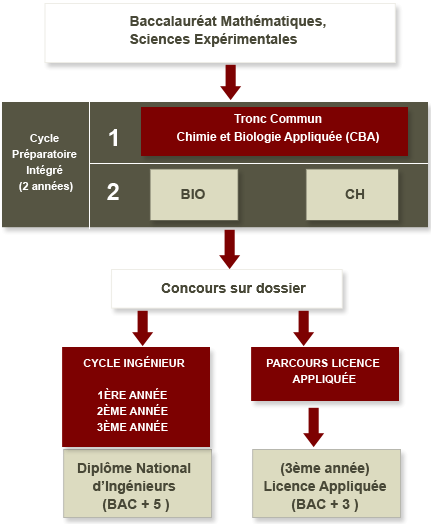

Le Département de Génie Biologie et Chimie propose, après une année de tronc commun en Chimie - Biologie Appliquée (CBA), le choix entre deux options, dans le cadre du cycle préparatoire intégré :

La filière Biologie industrielle a pour objectif de former des ingénieurs aptes à maîtriser les méthodes d’analyses chimiques et biologiques, dans un secteur industriel, agroalimentaire ou pharmaceutique. La formation dispensée est axée sur l’aspect « procédés » dans différentes spécialités (Biochimie, Microbiologie, Génétique, immunologie, Biologie Moléculaire, Environnement) et ceci en interaction avec les méthodes de génie biologique et de chimie. Ces ingénieurs par leur formation polyvalente, apporteront leurs compétences dans les bio-industries (amélioration par les procédés biotechnologiques de la production animale, végétale et de son conditionnement) dans les structures d’analyse biologique et biochimique, ou dans les laboratoires d’études et de recherches.
La filière Chimie Industrielle a pour objectif la formation d’ingénieurs aptes à conduire des activités d’analyses physico-chimiques et d’élaboration de matériaux. La formation dispensée concerne différents aspects scientifiques et technologiques : transfert fluide-solide, échanges thermiques et énergétiques, techniques de séparation et de purification, régulation et contrôle des procédés. Les ingénieurs peuvent au sein de l’industrie chimique et para-chimique apporter leur compétence dans l’amélioration et la maintenance des procédés assurant la compétitivité liée à la qualité du produit, à la sécurité, à l’utilisation optimale des matières premières et des énergies et à la sauvegarde de l’environnement.
Ce cycle dure 3 ans et l’admission à ce cycle se fait par voie de concours ouvert aux étudiants inscrits en cycle préparatoire intégré de l’INSAT.
Les filières concernées par le concours, le nombre de places ouvertes pour chaque filière au titre de ce concours ainsi que les conditions de participation et les critères d’évaluation sont fixés par un décret du ministre de l’enseignement supérieur, de la recherche scientifique et de la technologie selon les besoins.
Ce parcours est destiné aux étudiants n’ayant pas été admis au cycle d’ingénieur.
Parallèlement aux cours de bases, le Département Génie Informatique et Mathématiques encourage les enseignants du département a établir des relations de collaboration et partenariat avec les industriels pour assurer des cours d’actualité et faire travailler nos élèves ingénieurs sur de vrais problématiques. Les relations de partenariat touchent l’ensemble des acteurs dans le monde professionnel en Tunisie, dont on cite:
Le département de Génie Biologique et de Chimie compte 45 enseignants permanents et 15 enseignants vacatiares/contractuels.
| Nom et Prénom | Grade | Discipline | |
|---|---|---|---|
| {{prof.nom}} | {{prof.grade}} | {{prof.discipline}} | {{prof.email}} |
| Nom et Prénom | Grade | Discipline | |
|---|---|---|---|
| {{prof.nom}} | {{prof.grade}} | {{prof.discipline}} | {{prof.email}} |
| Nom et Prénom | Grade | Discipline | |
|---|---|---|---|
| {{prof.nom}} | {{prof.grade}} | {{prof.discipline}} | {{prof.email}} |